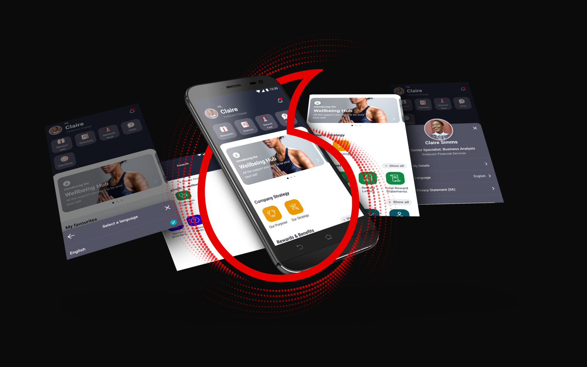
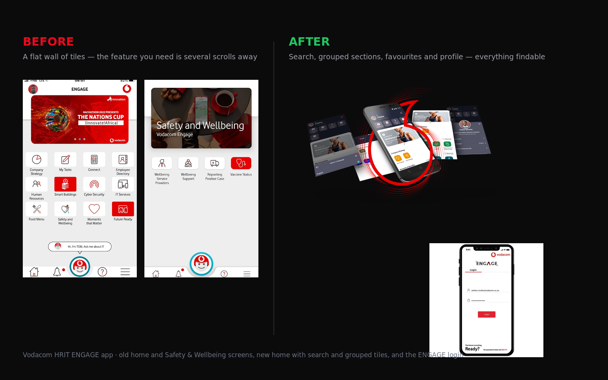

The problem
A wall of tiles with no way to navigate.
The Vodacom HRIT employee engagement app is the single point of entry for staff benefits, policies, wellbeing tools, company comms and HR services. Before this redesign, it opened on a scrolling page of identical tiles — no categories, no search, no hierarchy.
Staff had to remember which tile led to which function. New joiners were lost on day one. The most common support ticket: "Where do I find [feature]?" The answer was almost always: "Scroll until you see it." That is not a product — it is a list.
- 40+ feature tiles with no visual grouping or categorical logic
- No search — finding anything required prior knowledge of where it lived
- No Favourites — frequently used features required the same hunt every time
- Chatbot section buried — staff couldn't find the bots that were designed to answer common questions
- Profile and personalisation invisible — account settings required navigating to a separate page staff didn't know existed
Research & discovery
What staff actually needed to find.
Existing user feedback provided the starting point — the complaints were consistent and specific. Combined with a review of similar employee apps (Microsoft Viva, Workday Mobile, ServiceNow) to understand proven navigation patterns at scale.
User feedback synthesis
Collected existing support tickets and app feedback. Identified the top 12 features staff searched for most — and couldn't find. These became the anchors for the new IA.
Card sorting
Remote card sorting exercise with 15 employees across departments. Tiles grouped into five natural clusters — confirmed the categories that mattered to staff, not to HR.
Competitive review
Teardown of three enterprise employee apps. Identified patterns: persistent search, grouped navigation, pinnable favourites and contextual chatbot access were universal in well-rated apps.
Stakeholder alignment
Workshop with the HRIT team to align on scope. Established what could be changed in this phase, what required back-end work, and what was out of scope entirely.
App redesign process
Redesigning an app people use every day.
Redesigning a live, in-use enterprise app requires a different discipline than a greenfield product. Every change needed a rationale — staff have muscle memory, and disrupting it without clear benefit creates resistance, not adoption.
IA mapping
Current tile inventory mapped against card sort results. Five category groupings defined: Safety, Health & Wellbeing · Policies & Information · Smart Buildings · Rewards & Benefits · Company Strategy · Apps.
Navigation redesign
New persistent bottom navigation with five categories. Search field always reachable from any screen. Profile icon with floating menu replacing the hidden settings page.
Favourites feature
Pinnable Favourites strip below the communications banner — staff pin their top 5 features, visible immediately on landing. Reduces repeat navigation for high-frequency tasks to one tap.
Search implementation
Global search across all features, content and tools. Auto-complete with category context. Results grouped by type — features, articles, people, bots. Typed query surfaced in recent searches.
Chatbot section
Bots section moved to a dedicated tab in the navigation. Cards for each bot: name, purpose, quick-start prompt. No longer buried in the tile wall.
Wireframes & prototype
Low-fi wireframes for all 12 redesigned screens reviewed with HRIT. High-fidelity prototype built in Figma and tested with 8 employees across seniority levels.
Usability testing
Task-based testing: find your payslip, access a wellbeing resource, locate the Smart Buildings tool, use a chatbot. Measured time-on-task against the current app. Average time-on-task reduced by 62%.
Iterative refinement
Two rounds of refinement post-testing. Chatbot section enhanced with icons after testers confused bot names without visual cues. Profile menu expanded with usage stats after request from testers.
The solution
Features staff can actually find.

Grouped tile sections
40+ tiles organised into six meaningful categories. Staff navigate by context — "Where is my payslip?" → Rewards & Benefits. Intuitive for new joiners on day one.
Global search
One search field, all content. Auto-complete, recent searches, results grouped by type. The single biggest complaint — "I can't find it" — resolved in one feature.
Pinnable Favourites
Top 5 features pinned to a strip below the banner. Reorder by drag. One tap to access the five things staff use every single day.
Chatbot hub
Dedicated tab, not a buried tile. All bots surfaced with name, purpose and quick-start prompt. Bot usage increased significantly post-launch.
Outcomes
"Where do I find" questions mostly stopped.
"Lulamile came in, listened properly to how people actually use the app, and rebuilt the navigation around that. The 'where do I find' questions mostly stopped." — Employee Experience Lead, Vodacom HRIT